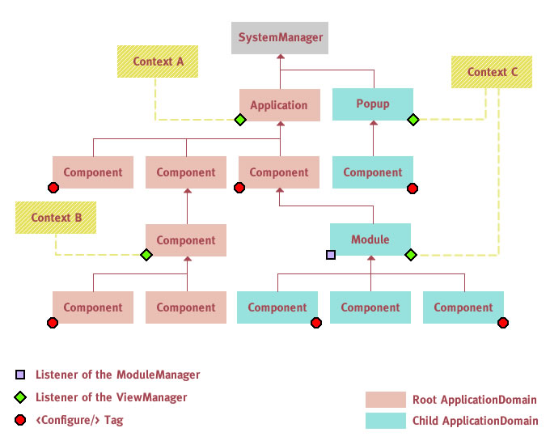

So far all objects that "live" inside a Parsley Context have been defined with either MXML, XML or ActionScript as detailed in 3 Configuration and Initialization. For Flash Applications these mechanisms will usually be sufficient as it is very likely that you are able to conveniently define all managed objects in XML or ActionScript - including view elements. For Flex Applications this approach is not ideal since you'll prefer to declare your components in your MXML files within the component hierarchy and not in a separate Parsley Context MXML configuration class. So we'll need a different mechanism to connect these components defined within your MXML view definitions to objects declared with Parsley configuration files. The solution Parsley offers for this use case will be described in this chapter.
For view wiring each Context needs one or more so called view roots, which is a DisplayObject where the framework listens for bubbling events from components that wish to get wired to the Context. The mechanism is different whether you are using MXML tags to initialize the Context or whether you do that programmatically.
Context intialization with MXML tags
In Flex applications you can use the ContextBuilder tags introduced with version 2.2.
Those will automatically use the document object they are placed upon as the view root:
<parsley:ContextBuilder config="{BookStoreConfig}"/>
In rare cases where this is not desired you may alternatively specify the view root explicitly:
<parsley:ContextBuilder config="{BookStoreConfig}" viewRoot="{someOtherDisplayObject}"/>
Programmatic Context intialization
If you initialize the framework programmatically the view root has to be specified explicitly:
XML configuration
var viewRoot:DisplayObject = ...;
XmlContextBuilder.build("bookStoreConfig.xml", viewRoot);
Multiple configuration mechanisms
var viewRoot:DisplayObject = ...;
ContextBuilder.newSetup()
.viewRoot(viewRoot)
.newBuilder()
.config(FlexConfig.forClass(BookStoreConfig))
.config(XmlConfig.forFile("logging.xml"))
.build();
In case you want to specify that a component should be wired to the Context directly within the component
itself, you have two options to do so. First you can use the <Configure> tag:
<s:Panel
xmlns:fx="http://ns.adobe.com/mxml/2009"
xmlns:s="library://ns.adobe.com/flex/spark"
xmlns:parsley="http://www.spicefactory.org/parsley"
>
<fx:Declarations>
<parsley:Configure/>
</fx:Declarations>
<!-- ... -->
</s:Panel>
In Flex 4 this would need to go into the <fx:Declarations> tag. In the example above it would
be the Panel (the component the tag is placed upon) that would be wired to the Context. Alternatively you
can specify the object(s) to be wired as children of the <Configure> tag.
In this case they do not even have to be a component:
<s:Panel
xmlns:fx="http://ns.adobe.com/mxml/2009"
xmlns:s="library://ns.adobe.com/flex/spark"
xmlns:parsley="http://www.spicefactory.org/parsley"
xmlns:view="myproject.view.*"
>
<fx:Declarations>
<parsley:Configure>
<view:MyPanelPM id="model"/>
</parsley:Configure>
</fx:Declarations>
<!-- ... -->
</s:Panel>
In this example we declare a presentation model within the component and then instruct the framework to wire that model to the Context. You can add more than one child tag to wire more than one object. With one or more child tags the component itself would not be managed by the container at all, so you cannot place any Parsley metadata tags into the component. This mode is primarily intended for performance optimizations. See the next section for a second option to avoid reflection on heavy component classes.
Wiring in ActionScript Components
When you create a Flex component in ActionScript or when you build a pure Flash application
you cannot use the <Configure> MXML tag. In this case you can revert to a corresponding API:
public class MyView extends Sprite {
function MyView () {
Configure.view(this).execute();
}
/* ... */
}
In the example above MyView itself would simply get added to the Context.
But the API has lots of other options (including some fairly low-level hooks).
Like with the <Configure> MXML tag you could for example specify a
different target to get wired:
var someHelper:Object = ...;
Configure.view(this).target(someHelper).execute();
You need to be aware though that this operation may be asynchronous, so you cannot rely on the object
being configured in the next line of code. For initialization logic it is best to use an [Init]
method on the managed view.
For the other options of this API see the ASDoc for the Configure class.
Explicit Wiring without Creating a Dependency on Parsley
For very simple use cases where no special options need to be specified, you can alternatively
dispatch a plain Event with the type configureView and bubbling set to true:
public class MyView extends Sprite {
function MyView () {
addEventListener(Event.ADDED_TO_STAGE, configure);
}
private function configure () : void {
dispatchEvent(new Event("configureView", true));
}
/* ... */
}
Now this component would even work without running in the Parsley container. The 9.4 Automatic Component Wiring is another option that avoids tying your component to Parsley.
Wiring in Flash Applications
In Flash Applications the type of wiring as described in this chapter is often not needed. Without MXML serving as a nice means to define the view declaratively, you'd often declare view related objects directly in a Parsley XML or ActionScript configuration file. So there is no need to explicitly wire them.
In case you do not want to define the view in the Context and instead wish to use a mechanism where a view dynamically notifies the Context that it wishes to get wired, you could use one of the techniques described above based on bubbling events. For this to work you first have to specify the view root to be used to catch those events:
var viewRoot:DisplayObject = ...;
ActionScriptContextBuilder.build(MyConfig, viewRoot);
Parsley reflects on all managed objects and reflection on components
currently is a very expensive operation due to their dozens of properties, methods and events.
The situation has improved for Parsley 2.4 and newer as it is now based on the describeTypeJSON
function introduced with Flash Player 10.1 which runs significantly faster than the old XML-based describeType
which now will only be used when you are on an older player. But the impact of reflecting on these huge
UIComponents is still high. Parsley maintains an internal reflection cache
so that each class is only processed once, but if you are using a high number of different component classes
this may not help much.
In a small application this effect may be negligible, but for larger applications it might indeed
be a concern. This option allows to avoid a perceivable perfomance degradation in these cases.
To allow for performance optimizations the FastInject tag was introduced in Parsley 2.2:
<s:Panel
xmlns:fx="http://ns.adobe.com/mxml/2009"
xmlns:s="library://ns.adobe.com/flex/spark"
xmlns:parsley="http://www.spicefactory.org/parsley"
xmlns:view="myproject.view.*"
>
<fx:Script>
<![CDATA[
import com.bookstore.model.MyPanelPM;
public var model:MyPanelPM;
]]>
</fx:Script>
<parsley:FastInject property="model" type="{MyPanelPM}" />
<!-- ... -->
</s:Panel>
This is somewhat similar to the example with the <Configure> tag and its target
attribute. Again it is the model that is wired to the Context. But the difference is that in the former
example the model was created by the tag within the component and then the existing model instance got
configured by the framework. In this example the container will create the model (it must be configured
for the corresponding Context) and then inject it into the component. The major advantage of this approach
is that the model could be shared between components which is not possible with the preceding example.
Again use this mechanism only when performance is a concern and you want to avoid that the component
itseld gets wired to the Context.
The <FastInject> tag also allows to define multiple injections with child tags:
<parsley:FastInject injectionComplete="init();">
<parsley:Inject property="model" type="{MyPanelPM}"/>
<parsley:Inject property="status" type="{MyApplicationStatus}"/>
</parsley:FastInject>
To combine them into a single parent tag if you want to perform some action when all injections have been processed. This would be cumbersome if you'd use separate tags since you'd need to manually check which injections have been already processed. In the example above there would be the guarantee that the init method will only be invoked when all injections have been performed.
There are similar events for the <FastInject> tag
like creationComplete or addedToStage which differ from the
original component events that those are only dispatched when the corresponding component event was dispatched
and the injections have been performed, facilitating to find the right moment to initialize the
component.
Since version 2.4 there is also an API offering the same functionality as the <FastInject> tag.
public class MyView extends UIComponent {
public var pm:MyViewPM;
function MyView () {
FastInject
.view(this)
.property("pm")
.type(MyViewPM)
.complete(injectionComplete)
.execute();
}
private function injectionComplete () : void {
/* ... */
}
/* ... */
}
Of course this API also works in pure Flash applications.
All the examples in this section avoided reflection on UIComponents at the price of having framework specific
tags in each component that needs an injection. Some developers prefer to be more purist and use an IOC container
in a non-invasive way. For these needs the autowiring feature is available as explained in 9.4 Automatic Component Wiring.
But the default processor for autowiring adds each view that passes the ViewAutowireFilter to the Context,
which in turn causes reflection on that component. Since this chapter is about showing ways to avoid reflection,
we'll demonstrate an alternative way of doing autowiring. Since adding the object to the Context is the only
obvious option for dealing with an autowired view, there are no other defaults available. Autowiring by some other
means is usually highly application specific, so that you need to create your own ViewProcessor for that
purpose.
Creating a custom autowiring mechanism that avoids reflection involves these steps:
ViewProcessor that does the actual processing of the view (e.g. performing injections). ViewAutowireFilter that knows which views should get processed. The default filter is more suited
for the use case where you add the views themselves to the Context. The following sections give a simple example for all these steps.
The View Component
Let's assume you want to work with a pattern where all views that belong to a known set of packages and
have a Presentation Model declared with a variable named model automatically get their model added
to the Context. This is a cheap operation as a Presentation Model usually does not extend from UIComponent
making reflection on it much faster. This is really just an example, if you don't like this pattern just create
your own that fits the requirements of your application.
Here is part of a sample view component:
<s:Panel ...>
<fx:Declarations>
<view:MyPanelPM id="model"/>
</fx:Declarations>
<!-- ... -->
</s:Panel>
The Custom ViewProcessor
The ViewProcessor simply adds the model to the Context. To make it bullet-proof you could additionally check whether the model's class name matches a particular pattern like <ViewClassName>PM which is often used.
public class MyViewProcessor implements ViewProcessor {
private var dynamicObject:DynamicObject;
public function init (config:ViewConfiguration, context:Context) : void {
var target:Object = config.view["model"];
dynamicObject = context.addDynamicObject(target);
}
public function destroy () : void {
dynamicObject.remove();
}
}
The processor adds the PM to the Context and removes it again at the end of the view lifecycle.
The invocation of the destroy method is triggered by the lifecycle handler in use (where
you also could write a custom one if required, see 9.7.7 Custom Lifecycle Handlers).
The Custom ViewAutowireFilter
Our autowire filter simply checks whether the package name matches a particular pattern and whether
the object has a property named model. For efficiency we do this already in the prefilter
method. In a multi-Context environment this is always invoked in the filter of the root Context. For every
object that passes the prefilter, the framework will dispatch a bubbling event that will be caught by
the nearest Context in the view hierarchy above the target. Then the filter method in the target Context
will make the final decision before the object is passed to the processor in the taget Context.
Therefore you only need logic in the final filter method when the logic is different for
the target Contexts in use. Different child Contexts created by modules for example might even install
their own ViewAutowireFilter. In this case most of the logic should reside in the filter
method and the prefilter method in the root Context should only get used for performance optimizations
(e.g. sparing the bubbling event when we know it is a skin only). But in our case the final filter
method always returns ViewAutowireMode.ALWAYS.
public class DefaultViewAutowireFilter extends AbstractViewAutowireFilter {
private var packageFilter:RegExp = /^com\.mycompany\..*\.view\..*/;
public override function prefilter (object:DisplayObject) : Boolean {
return packageFilter.test(getQualifiedClassName(object)) && object.hasOwnProperty("model");
}
public override function filter (object:DisplayObject) : ViewAutowireMode {
return ViewAutowireMode.ALWAYS;
}
}
Installing the Custom Processor and Filter
Processor and Filter can be installed with child tags of the ContextBuilder tag:
<parsley:ContextBuilderTag config="">
<parsley:ViewSettingsTag autowireFilter="{new MyViewAutowireFilter()}"/>
<parsley:ViewProcessorTag type="{MyViewProcessor}"/>
</parsley:ContextBuilderTag>
The filer is an instance that get used for all view components while we just specify a class for the processor as the framework will create a new instance for each view. This is convenient as it allows us to keep state, like we do in our example processor shown above.
Since version 2.2 you can also rely on an automatic variant of view wiring and avoid the need to add framework specific configuration to individual component classes. This mode was not trivial to implement as Parsley is a multi-Context environment and for automatic wiring there is the additional difficulty to know which Context each component should be wired to. This is now done based on their placement in the view hierarchy. A component is wired to the nearest Context in the hierarchy above the component.
Autowiring has to be explicitly activated:
MXML
<parsley:ContextBuilder>
<parsley:ViewSettings autowireComponents="true"/>
<parsley:FlexConfig type="{MyConfig}"/>
</parsley:ContextBuilder>
ActionScript
BootstrapDefaults.config.viewSettings.autowireComponents = true;
The line above must be executed before the first Context gets created. As you might expect the autowireFilter
is pluggable like almost everything in Parsley. So you can implement your own selection logic, telling the framework
which components should be wired. The default implementation simply wires all components which are listed in
the Context configuration (in MXML or XML) with the new <View> tag. This way configuration is really
centralized and you can see which objects and views are managed by the container by examining a single
configuration class. A sample configuration snippet might look like this:
<View type="{MainView}"/>
<Object type="{MainViewPM}"/>
<View type="{StatusBar}"/>
<Object type="{StatusBarPM}"/>
<View type="{ImageTileList}"/>
<Object type="{ImageTileListPM}"/>
<View type="{ImagePreviewWindow}"/>
<Object type="{ImagePreviewWindowPM}"/>
Here we simply list the views and their corresponding presentation models as pairs. Only the views listed here will get wired to the Context. In this example we are only using empty View tags, but you might also nest tags within them the same way like with Object tags. See 9.6 MXML and XML Configuration for details.
As you can see in the example above we are using the <View> tags to declare custom views that are specific
to the application. The built-in components from the Flex SDK that live in the spark.* or mx.*
packages or the ones from the Flash Player API (flash.* packages) are prefiltered to improve performance,
so they cannot be configured with <View> tags if you use the default setup. It's usually not a good idea
to configure them like this as you have lots of them and the matching to their configuration can become challenging.
So normally you'd wire your custom panels, windows, popups, tabs and boxes and pass things down to the components that those views
contain.
But this is only the default mechanism.
If you need more finegrained control over which components to wire you can simply implement your own autowire filter
and for example use a mechanism that selects components based on the package they belong to like some other
frameworks handle this. The easiest way is to simply extend DefaultViewAutowireFilter
and overwrite the filter method:
public class MyAutowireFilter extends DefaultViewAutowireFilter {
public override function filter (view:DisplayObject) : ViewAutowireMode {
if (... someCondition ...) {
return ViewAutowireMode.ALWAYS;
}
else {
return ViewAutowireMode.NEVER;
}
}
}
And finally install that filter like this:
<parsley:ContextBuilder>
<parsley:ViewSettings
autowireComponents="true"
autowireFilter="{new MyAutowireFilter()}"
/>
<parsley:FlexConfig type="{MyConfig}"/>
</parsley:ContextBuilder>
In many cases metadata is sufficient and the most convenient configuration mechanism. The metadata tags have the same effect on a component like on a regular object created by the container:
<s:Panel
xmlns:fx="http://ns.adobe.com/mxml/2009"
xmlns:s="library://ns.adobe.com/flex/spark"
xmlns:parsley="http://www.spicefactory.org/parsley"
addedToStage="dispatchEvent(new Event('configureView', true));"
>
<fx:Script>
<![CDATA[
import com.bookstore.events.*;
import com.bookstore.model.*;
[Bindable]
private var user:User;
[Inject]
public var model:LoginPanelPM;
[MessageHandler]
public function handleLogin (event:LoginEvent) : void {
this.user = event.user;
}
]]>
</fx:Script>
<s:Label text="Current User: {user.name}"/>
<!-- some more components ... -->
</s:Panel>
Many developers prefer to avoid to add too much logic to their components. In these cases the only
Parsley tag used in a component is often the [Inject] tag on the presentation model which
encapsulates all the logic and data required by that component.
Since version 2.2 you can alternatively (or additionally) configure views in MXML or XML. This comes in handy in two scenarios: First you may want to use the same component class in different scenarios and thus cannot use metadata configuration as those tags can only be applied on the class level not on the instance level. Second you may want to use this configuration mechanism to specify the components eligible for autowiring as demonstrated in 9.4 Automatic Component Wiring.
This feature was inspired by the configuration mechanism used in Flicc. The container applies the configuration to the view when it is wired to the Context. The configuration to apply to a wired component will be matched either by id or by type:
<View id="myPanel" type="{MyPanel}">
<Property name="url" value="http://www.somewhere.com/"/>
<MessageHandler method="execute"/>
</View>
It is basically the same syntax like for regular object configurations. But the use of the View tag instructs Parsley not to attempt to create instances of that class but instead wait until any matching component gets dynamically wired to the Context and then applies the configuration.
Parsley will first attempt to match by id. This is either the name of the Flex component or alternatively an id specified explicitly in the Configure tag:
<parsley:Configure configId="someId"/>
If no match for the id is available then the framework will attempt to match by type, throwing an Error if it runs into ambiguous definitions. If no matching type is found Parsley will fall back to the old mechanism to only process metadata for that instance.
Due to the fact that Flex Components are connected to the IOC Container "on the fly" the lifecycle for Components is different than for objects defined directly in the container. Parsley offers several configuration options to control that lifecycle.
The default behavior is that a component gets removed from the Context automatically
when it gets removed from the stage. But this can be changed through an attribute of the ViewSettings tag:
<parsley:ContextBuilder>
<parsley:ViewSettings autoremoveComponents="false"/>
<parsley:FlexConfig type="{MyConfig}"/>
</parsley:ContextBuilder>
With the setting above a component must now dispatch a custom "removeView" event when it wishes to get unwired.
Note that this option does not have any influence when you use <FastInject> as in this case the target component
is not managed at all and will just receive a one-off injection.
Closely related is the lifecycle of the so-called view roots. If you use the <Configure> tag for example, this
tag sends a bubbling event to signal that it wishes to get wired to the nearest Context. Other view wiring options like autowiring
work in a similar way. A view root is the DisplayObject that catches
these bubbling events. When you use the <ContextBuilder> tag, the component that holds this tag automatically becomes such
a view root. The next section on popups and AIR windows shows that there are some scenarios where you need to add additional
view roots to the Context.
For these view roots the default behavior is to control their lifecycle in a similar way like for wired components. It means that a view root gets removed from the Context when it gets removed from the stage, so it no longer listens for bubbling events. On top of that the associated Conetxt gets destroyed when the last view root gets removed. This is very useful in cases where a Context is declared in a popup for example. You don't need to destroy it explicitly, this happens automatically when the user closes the popup. In case you want to prevent this there is another flag specifically for view roots:
<parsley:ContextBuilder>
<parsley:ViewSettings autoremoveViewRoots="false"/>
<parsley:FlexConfig type="{MyConfig}"/>
</parsley:ContextBuilder>
The two preceding sections showed switches for globally controlling the lifecycle of components and view roots. But there is also a way to change the settings for a single component:
Configure
The Configure MXML tag and API both come with an autoremove property:
<parsley:Configure autoremove="false"/>
FastInject
Likewise the FastInject MXML tag and API both come with an autoremove property:
<parsley:FastInject autoremove="false" property="pm" type="{MyPM}"/>
Autowiring
When using the default ViewAutowireFilter there is support for a metadata tag on the
wired view component to indicate whether autoremove should be applied or not.
<fx:Metadata>
[Autoremove("false")]
</fx:Metadata>
If you use one of the configuration options shown above that switch off the automatic lifecycle management, you must be careful not to introduce memory leaks. A component (or any kind of object) cannot get garbage-collected as long as it is managed by Parsley. So if you turn off the lifecycle management, you have to make sure that one of the following conditions is met for all wired components in that Context:
removeView Event to make sure it is properly unwired. Many developers are tempted to initialize the Presentation Model of a managed component like this:
<s:Panel xmlns:fx="http://ns.adobe.com/mxml/2009"
xmlns:s="library://ns.adobe.com/flex/spark"
xmlns:parsley="http://www.spicefactory.org/parsley"
width="400" height="300"
addedToStage="init()"
>
<fx:Script>
<![CDATA[
[Inject]
public var pm:SomePM;
private function init () : void {
pm.init();
}
]]>
</fx:Script>
<fx:Declarations>
<parsley:Configure/>
</fx:Declarations>
</s:Panel>
There are two major problems with this approach, and both often introduce bugs that surface late in the development lifecycle of an application and are often hard to narrow down:
ADDED_TO_STAGE is fired.
First it is impossible to synchronize the Flex component lifecycle to that of Parsley, as there are often subtle differences
in the event order. For example the INITIALIZE event might fire before or after ADDED_TO_STAGE,
and Parsley must wait for both events before performing any injections.
Second the associated Context might initialize asynchronously, for example if it contains XML configuration which
must be loaded first or any object annotated with [AsyncInit]. The injection would occur after the Context
has been initialized in this case. ADDED_TO_STAGE event might get fired again at unexpected times. This issue is not even related
to Parsley, but often getting overlooked. Stage events are low-level infrastructure events and make your code fragile
when you rely on them for application-level lifecycle management. When the user resizes the application for example,
Flex might need to introduce scroll bars and suddenly reparent a component. This would cause an interim REMOVED_FROM_STAGE
immediately followed by another ADDED_TO_STAGE event, which would trigger the initialization shown above again.
Applications that use this approach might suddenly lose their view state. This is particularly dangerous as testing resizing often
gets overlooked in QA. Thus it's recommended to avoid this pattern, no matter whether you are using Parsley or not.
For its internal lifecycle management Parsley has logic that filters these interim events. This is how the right approach would look like.
Using <Configure> or Autowiring:
<s:Panel xmlns:fx="http://ns.adobe.com/mxml/2009"
xmlns:s="library://ns.adobe.com/flex/spark"
xmlns:parsley="http://www.spicefactory.org/parsley"
width="400" height="300"
>
<fx:Script>
<![CDATA[
[Inject]
public var pm:SomePM;
[Init]
public function init () : void {
pm.init();
}
]]>
</fx:Script>
<fx:Declarations>
<parsley:Configure/>
</fx:Declarations>
</s:Panel>
Using <FastInject>
<s:Panel xmlns:fx="http://ns.adobe.com/mxml/2009"
xmlns:s="library://ns.adobe.com/flex/spark"
xmlns:parsley="http://www.spicefactory.org/parsley"
width="400" height="300"
creationComplete="init()"
>
<fx:Script>
<![CDATA[
public var pm:SomePM;
private function init () : void {
pm.init();
}
]]>
</fx:Script>
<fx:Declarations>
<parsley:FastInject
property="pm"
type="{SomePM}"
injectionComplete="init()"
/>
</fx:Declarations>
</s:Panel>
In both examples shown above it is guaranteed that the injection has been performed when the init
method gets executed.
When using <FastInject> you cannot use the [Init] or [Destroy] tags as the component
is not managed in this case and metadata would not get processed. The behavior of these two metadata tags for wired views
is explained in the following sections.
Managed views support the same [Init] and [Destroy] methods like regular managed objects
declared in a Parsley configuration class or file, but the lifecycle for managed views is usually different.
Methods annotated with [Init]
For an object declared directly within a Parsley configuration file these methods get executed after the container has instantiated and configured the object. For a Flex Component that is dynamically wired it will be invoked after the container caught the configuration event dispatched by the Component and after all injections have been processed.
Methods annotated with [Destroy]
For an object declared directly within a Parsley configuration file these methods get executed after the
container has been destroyed with a call to Context.destroy() or (in case of DynamicObjects)
when the object has been removed from the Context.
For a Flex Component that is dynamically wired, per default the destroy method
will be invoked after the Component has been removed from the stage. Of course that means that the same
instance can have multiple invocations of its Init and Destroy methods in case it gets removed and re-added
to the stage.
How the lifecycle of managed views is demarcated is usually determined by the ViewSettings
of the corresponding Context as described in 9.7.1 Controlling the Lifecycle of Components. Thus for the default
behaviors Parsley comes with two implementations of the ViewLifecycle interface, one that
controls the lifecycle of the component based on the time it is on the stage, the other based on
custom events (configureView and removeView) dispatched by the component.
But you can install custom lifecycle handlers for particular view classes (and their respective subtypes) if more low-level control is required. Here is an example for a lifecycle handler that simply listens for events in the component:
public class MyPanelLifecycle extends EventDispatcher implements ViewLifecycle {
private static const DESTROY:String = "destroy";
private static const INIT:String = "init";
private var config:ViewConfiguration;
public function start (config:ViewConfiguration, context:Context) : void {
this.config = config;
config.view.addEventListener(DESTROY, destroyView);
config.view.addEventListener(INIT, initView);
}
public function stop () : void {
config.view.removeEventListener(DESTROY, destroyView);
config.view.removeEventListener(INIT, initView);
config = null;
}
private function removeView (event:Event) : void {
dispatchEvent(new ViewLifecycleEvent(ViewLifecycleEvent.DESTROY_VIEW, config));
}
private function configureView (event:Event) : void {
dispatchEvent(new ViewLifecycleEvent(ViewLifecycleEvent.INIT_VIEW, config));
}
}
The only purpose of such a lifecycle handler is to dispatch messages when the lifecycle of the component starts or ends (highlighted in red). The class above is just a very simple example where the handler primarily "translates" some events it knows to matching events the framework knows. But it could contain any kind of custom logic.
Such a handler can then be installed for a Context and all its children like this:
<parsley:ContextBuilder config="...">
<parsley:ViewLifecycle viewType="{MyPanel}" lifecycle="{MyPanelLifecycle}"/>
</parsley:ContextBuilder>
For each managed view of type MyPanel or any of its subtypes, the specified lifecycle handler
will then be used. The framework will create a new instance of the lifecycle handler for each view instance
so that you can keep state in the handler class.
For Flex Popups and Native AIR Windows some extra step is required to tell the framework about them.
This is because those are views which are disconnected from the view
hierarchy below the main Application component. A Flex Popup usually sits somewhere right below the SystemManager.
A Native AIR Window even comes with its own SystemManager. So you have to connect both manually to
a Parsley ViewManager if you want to use view wiring in popups and windows. The following sections
show you how to do this.
Flex Popup
The following code snippet assumes that it is either part of a wired MXML component or another tpye of object managed by Parsley, so that the injection is actually performed:
[Inject]
public var context:Context;
private function showPopup () : void {
var win:TitleWindow = new TitleWindow();
// set properties
context.viewManager.addViewRoot(win);
PopUpManager.addPopUp(win, this);
}
Declarative Popups
Since version 2.3 you can now also specify popups declaratively within MXML components. This feature is based
on the Cairngorm 3 popup library, so in order to use it you need to include the corresponding SWC. The Parsley download
contains both the Flex 3 and Flex 4 version of that library in the libs folder.
The primary addition to the feature set supported by the Cairngorm tag is the transparent and automatic
wiring to the Parsley Context. So in contrast to the examples shown above, you don't have to explicitly take care
of connecting the Popup to the Parsley Context. All you have to do is using the <PopUp> tag in the
Parsley MXML namespace instead of the <PopUpWrapper> tag in the Cairngorm namespace. Otherwise the
Parsley variant supports the same set of attributes like the Cairngorm one:
[Bindable]
private var popupOpen:Boolean;
[...]
<parsley:PopUp open="{popupOpen}" center="true">
<myNS:SomePopUp/>
</parsley:PopUp>
AIR Window
This is analogous to the wiring of a Flex Popup:
[Inject]
public var context:Context;
private function openWindow () : void {
var win:Window = new Window();
// set properties
context.viewManager.addViewRoot(win);
win.open();
}
Autoremoval of Contexts in AIR Windows
The default behavior for view roots in a Parsley application is to automatically get removed from the Context once the view is removed from the stage. For this to work Parsley must listen for stage events. This works reliably for Flex Popups without any additional plumbing, but unfortunately native AIR windows show a somewhat flaky behavior in that respect. So if you create a separate Context inside an AIR window and want it to get destroyed automatically when you close the window, some more work is required.
First switch off the autoremoval feature for the Context you create inside the AIR window:
<parsley:ContextBuilder config="...">
<parsley:ViewSettings autremoveViewRoots="false"/>
</parsley:ContextBuilder>
This way Parsley does not listen to the stage events of the window, but instead for a custom "removeView"
event. So you have to enhance the wiring of the AIR window shown in the previous section to dispatch this custom event:
[Inject]
public var context:Context;
private function openWindow () : void {
var win:Window = new Window();
// set properties
context.viewManager.addViewRoot(win);
win.addEventListener(Event.CLOSE, function (event:Event) : void {
win.dispatchEvent(new Event("removeView"));
});
win.open();
}
In the current version there is no way
to teach the framework to listen to the CLOSE Event directly, so the "translation" step shown above
is required. A future version will very likely offer a shortcut for this scenario.
The following diagram illustrates how view wiring works in a modular application and why it is important to manually connect Flex Popups and Native AIR Windows to a Context:
The Flex Components that contain a <Configure/> tag dispatch a bubbling event that gets caught
by the next listener of a ViewManager in the hierarchy above that component. This way each component
finds its matching Context, which is important because a component loaded into a module usually also needs
access to the configuration of that module. If it would get wired to the root Context, it would only "see"
the object in that Context.
For Context C in the diagram you'll see that two view roots were connected to the Context: One for the root
component of the loaded module and one for a popup opened by the module. It becomes apparent now why this
manual connection to the popup is necessary: if a component somewhere below the popup would dispatch a bubbling
event it will end up in the SystemManager and never reach the ViewManager sitting on the root module
component if we would not place a second listener on the popup itself.
Finally this mechanism also handles ApplicationDomains for us: The internal ModuleManager of the Parsley
framework puts listeners on the root module component that catches bubbling events from ContextBuilders
somewhere below and tells them the ApplicationDomain to use.
In some rare cases you may want to load a Flex Module which only contains a few MXML view classes which
you want to be wired to the Context, but no controller, command, presentation or domain model. You might be
tempted to skip Context creation in this case, but that would lead to problems as the components would be
wired to the root Context then which reflects on the classes using a different ApplicationDomain.
So you should still create a Context at the root component in the module, even if it is empty.
This can simply be achieved through placing an empty <parsley:ContextBuilder/> tag into
the root component.